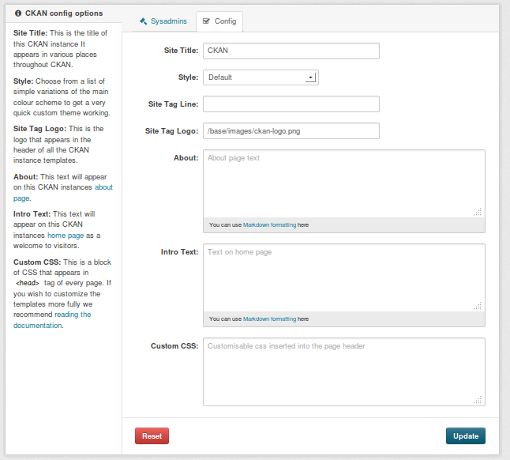

Getting Started¶
Once you’ve finished installing CKAN, this section will walk you through getting started with your new CKAN website, including creating a CKAN sysadmin user and some test data, and the basics of administering and configuring your CKAN site.
Creating a Sysadmin User¶
You have to use CKAN’s command line interface to create your first sysadmin user, and it can also be useful to create some test data from the command line. For full documentation of CKAN’s command line interface (including troubleshooting) see Command Line Interface.
Note
CKAN commands are executed using the paster command on the server that
CKAN is installed on. Before running the paster commands below, you need to
make sure that your virtualenv is activated and that you’re in your ckan
source directory. For example:
. /usr/lib/ckan/default/bin/activate cd /usr/lib/ckan/default/src/ckan
You have to create your first CKAN sysadmin user from the command line. For
example, to create a user called seanh and make him a sysadmin:
paster sysadmin add seanh -c /etc/ckan/default/development.ini
If a user called seanh already exists he will be promoted to a sysadmin. If
the user account doesn’t exist yet you’ll be prompted to enter a password and
the account will be created.
For a list of other command line commands for managing sysadmins, run:
paster sysadmin --help
Creating Test Data¶
It can be handy to have some test data to start with, to quickly check that
everything works. You can add a standard set of test data to your site from the
command line with the create-test-data command:
paster create-test-data -c /etc/ckan/default/development.ini
If you later want to delete this test data and start again with an empty
database, you can use the db clean command, see db: Manage databases.
For a list of other command line commands for creating tests data, run:
paster create-test-data --help
The Admin Page¶
If you login with a sysadmin account (see Creating a Sysadmin User) you’ll see a link in the top-right corner of the site to the administration page:
From the admin page you can set various CKAN options including the site title and logo, the about page text, the intro text on the front page, custom CSS, etc.
The Config File¶
All of the options that can be set in the admin page and many more can be set
by editing CKAN’s config file. By default, the config file is located at
/etc/ckan/default/development.ini for development sites or /etc/ckan/default/production.ini for production
sites. The config file can be edited in any text editor. For example, to change
the title of your site you would find the ckan.site_title line in your
config file and edit it:
ckan.site_title = Masaq Data Hub
Make sure the line is not commented-out (lines in the config file that begin
with # are considered comments, so if there’s a # at the start of a
line you’ve edited, delete it), save the file, and then restart your web server
for the changes to take effect. For example, if using Apache on Ubuntu:
sudo service apache2 reload
For full documentation of CKAN’s config file and all the options you can set, see Config File Options.
Note
If the same option is set in both the config file and in the admin page, the admin page setting takes precedence. You can use the Reset button on the admin page to clear your settings, and allow settings from the config file to take effect.